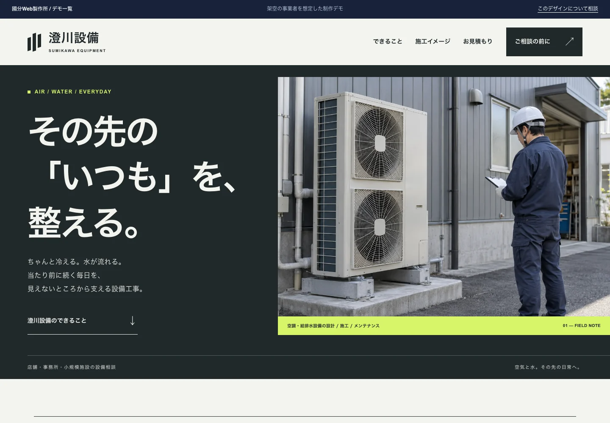
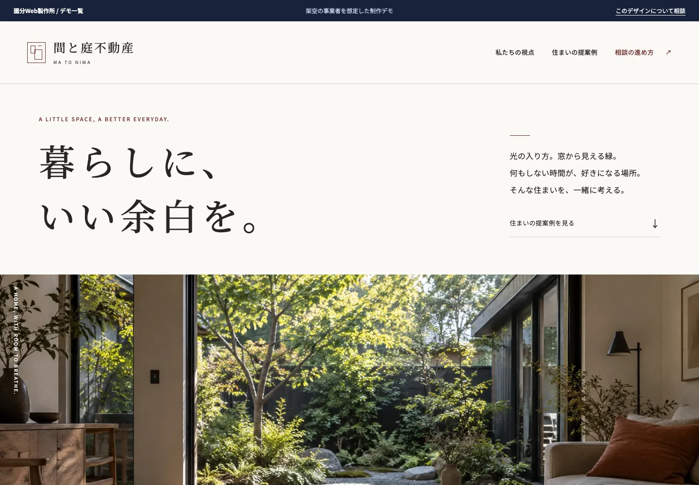
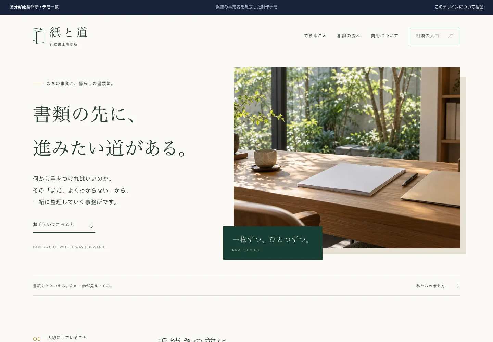
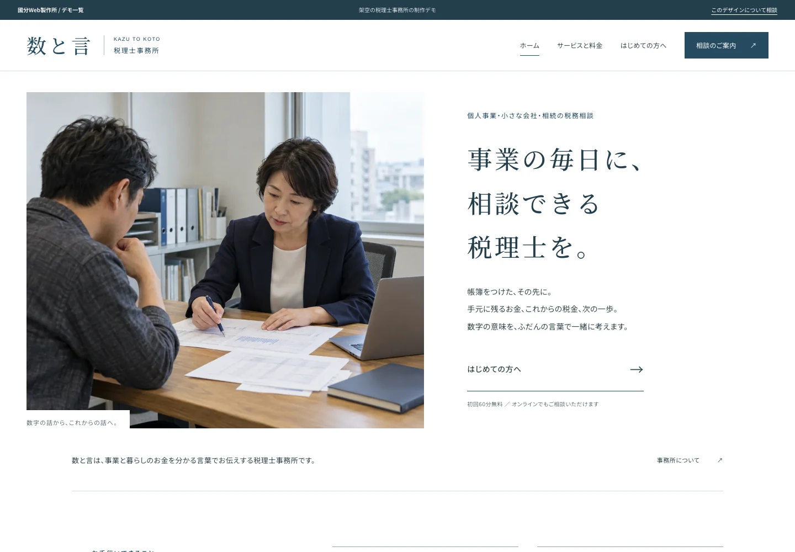

01
建設業のみなさま
電気設備・外構・塗装・防水・管工事・リフォームなど、地域密着の施工会社
- 「小さい工事でも頼めるの？」と、毎回電話で聞かれている
- 施工事例に何を載せればいいか分からない
- 見積までの流れが伝わらず、問い合わせが途中で止まる
現場の写真をLINEで送るだけで相談が始まる形へ。受付の案内から整えます。
建設業・士業のためのWeb製作所
あなたの仕事を、まだ知らない人へ。
ホームページと受付まわりを整えて、
相談前の「分かりにくい」を減らします。
初回のご相談は無料。LINE・フォームで気軽にどうぞ。
01 / WHAT WE DO
ホームページを作ることも、その前の整理も。
いまの状況に合わせて、ちょうどよい進め方をご提案します。
今のホームページと受付窓口を、お客さんの目線で点検します。
情報の整理からデザイン・公開まで。軽くて分かりやすいホームページを。
今のサイトを活かして、FAQや受付案内、返信の文章を見直します。
DESIGNED FOR YOUR BUSINESS
電気設備・外構・塗装・防水・管工事・リフォームなど、地域密着の施工会社
現場の写真をLINEで送るだけで相談が始まる形へ。受付の案内から整えます。
行政書士・税理士・社労士・司法書士などの事務所
「誰の、どんな相談に乗れるか」を明確に。専門用語は分かる言葉に言い換え、必要な説明を添えます。
建設業・士業以外でも、次のような条件に当てはまる事業者の方はご相談いただけます。
上記に当てはまるかどうか分からない場合も、まずはご相談ください。対応できるかどうかをお返しします。
02 / A SMALL FIRST STEP
どこで迷うのか。何があると相談しやすいのか。
今のサイトと受付窓口を点検し、
優先して整えたいところを見つけます。
¥5,500税込
LINEでHP診断を相談する「HP診断を希望」とだけ送っていただければ大丈夫です。
対応内容・地域・費用の考え方
説明の順番・言葉・スマホでの読みやすさ
許可・資格・実績・対応する人の情報
相談の入口・必要な準備・送信後の案内
Google検索とChatGPT Searchを対象に、公開情報の範囲で、重要な内容が文字で確認できるか、検索サービス向けの公開設定に明らかな妨げがないかを補助的に確認します。実際のクロール、掲載、検索順位、引用を確認・保証するものではありません。
※ 業種に応じて、建設業では工種・対象用途・施工地域、士業では対象・費用・流れ・準備・相談・対応者を確認します。
診断レポートを、実際に見てみる。
株式会社サクラ工業様の許可を得て、実際のレポートを公開しています。
03 / WEB DESIGN & PRICING
お問い合わせ前・見積前整理パック。
情報の整理からデザイン、スマホ対応、公開までをまとめて。料金はすべて税込みです。
SMALL START
¥55,000
会社の内容と連絡先を、
1枚で確認できるホームページ。
STANDARD
¥88,000
会社のこと、サービス、相談窓口。
必要な情報を、迷わない順番に。
MORE DETAIL
¥165,000
施工事例や対応分野など、
伝えたい情報が多い事業者の方へ。
納期は素材・原稿が揃った時点からの目安です。修正1回＝まとめてお送りいただいた修正指示一式。独自ドメイン等の維持費は別途かかります。
建設業向けに標準で整える内容
士業向けに標準で整える内容
SUPPORT & OPTIONS
サイト全体の作り直しが必要でなければ、必要なところだけ。
受付まわりの文章・案内
¥33,000〜 / 税込
FAQ、受付案内、返信テンプレートを整理。今のサイトはそのままに、相談しやすい入口へ。
公開後の更新・修正
¥5,500〜 / 件・税込
文章の変更、写真の差し替え、事例の追加など。保守契約なしで、必要な時だけ依頼できます。
サイト本体は作り替えません。
問い合わせ前の文章・案内・返信などの「部品」を整えて納品する商品です。
サイトは今のまま、受付まわりの分かりにくさを先に解消したい方向けです。
こんな方に向いています
簡易
33,000円
標準
66,000円
強化
88,000円
納品物について
GoogleドキュメントまたはPDF（文章データ）で納品します。
内容は、FAQ案・受付案内文・必要情報リスト・返信テンプレ・修正指示書です。
納品した文章は、そのままメール返信・LINE返信・FAQページ・問い合わせ案内に貼り付けて使えます。
既存サイトへの修正指示書は、現在の管理会社や制作者へ渡して使っていただく想定です。
強化プランのみ、簡易受付ページ1枚の新規制作が追加されます。
※ 本プランには、当方による既存サイトの直接編集・改修作業は含まれません。
※ 修正1回 ＝ まとめてお送りいただいた修正指示一式を指します。
※ 新規項目の追加・方針の大幅な変更は別途お見積りとなります。
公開済みのサイトを、必要な時だけ更新・修正できます。
保守契約は不要です。1件ごとの都度依頼で対応します。
対応例：文章の変更・追加、お知らせ・事例の追加、ボタンや電話番号の修正、写真の差し替えなど。
※ 対応可否は内容によります。まずご相談ください。
※ 大規模な改修は別途お見積りとなります。
| 施工事例整理 | 11,000円 / 件 | Before / After・金額・期間の統一フォーマット化 |
|---|---|---|
| 原稿代筆 | 16,500円 / ページ | 既存原稿やメモをもとに、読みやすく整える作業 |
| 画像選定 | 5,500円〜 | 素材写真の選定・圧縮 |
| LINE連携設定 | 5,500円〜 | LINE公式アカウントとの連携 |
| 採用ページ追加 | 44,000円 | 募集要項・仕事内容・応募導線 |
04 / SELECTED WORK
制作・公開した事例をご紹介します。
限られた素材から、必要な会社情報を確認しやすいホームページへ。
埼玉県川口市で、電気設備工事における外構工事を行う会社。新設された会社の概要・事業内容・所在地・連絡先を確認できる初期ホームページを制作しました。
経営事項審査や取引先・関係者の確認に必要な会社情報を、Web上で確認できる状態にすることを目的としています。
担当：設計 / 文章作成 / デザイン / スマホ対応 / 公開・表示改善
公開サイトを見る独自ドメイン取得の補助、Google検索の基本設定、SNSで共有された時の表示設定も担当。同社のHP診断レポート（PDF・新しいタブ）も公開しています。
05 / DEMO COLLECTION
4つの業種を想定した、1ページと3ページの制作デモです。
写真や文字の印象から、相談までの案内まで。
実際に触れて、仕上がりを想像してみてください。
掲載する事業者・物件・施工事例は架空の設定です。デモ内の写真はすべて生成画像を使用しています。

空調・給排水の対応範囲と、工事の内容を写真で紹介。見積もり前に知りたい条件と、準備するものを整理しています。

暮らしの雰囲気を伝える大きな写真に、比較しやすい項目を添えて。購入・賃貸それぞれの相談の進め方まで案内します。

相談者の「したいこと」から業務を紹介。専門用語を説明し、費用の内訳や手元に用意する情報を分かりやすく伝えます。

明細が自動で分類され、1つの文と「次にすること」になるまでを動きで見せるトップ。料金は年間の合計で比べられ、条件を選ぶと試算できます。専門用語には、その場で説明を添えています。
「このデモのような雰囲気で」とお聞かせください。
あなたの仕事と、相談する方に合わせて整えます。
06 / ABOUT THE STUDIO
國分 祐貴國分Web製作所 / 栃木県佐野市
難しいことを、整理して、
前に進められる形にする。
前職は、地方自治体の職員。6年間、教育委員会で入札・契約・予算書類の実務に携わっていました。
「説明が難しくて分からない」。制度を必要としていた方の声から、情報はあるだけでは届かないことを学びました。その経験が、いまのWeb制作の原点です。
仕事を依頼する人が何を知りたいのか。どこで迷ってしまうのか。一つひとつ整理しながら、あなたの仕事が伝わる形を考えます。
建設業・士業の公式サイトを、独自の確認項目に沿って調査。調査結果をもとに、必要な情報と伝え方を整理し、HP診断や制作に活かしています。
やり取りはLINE・フォームの文章で完結。電話・Zoom・対面の打ち合わせは行いません。
相談だけでも、診断だけでも。状況に合う進め方を一緒に考えます。
地方自治体の職員だった頃、奨学資金を必要としていた家庭から「説明が難しくて分からない」「役場が怖い」という声を聞きました。制度があっても届かないことがある。この経験が、いまの仕事の原点の一つです。
行政実務では、用語の言い換え、説明順の組み替え、手続の整理に取り組んできました。現在はプレインランゲージ（必要な人が情報を見つけ、理解し、利用できる状態を目指す考え方）や情報アーキテクチャ（情報の分類・配置を整えて分かりやすくする設計）も学びながらWeb制作へ活かしています。媒体は変わっても、複雑な情報を必要な人が使える形へ整理するという問題設定は変わっていません。
自治体勤務の中で建設関連の入札・契約・予算管理にも関わりました。建設技術の専門家ではありませんが、発注する側として何を確認し判断材料にするかを経験しています。
建設業と士業には、専門家と依頼者で持っている知識に差が生じやすい（情報の非対称性）という共通した構造があります。加えて、信用財的サービス（credence service＝依頼した仕事の判断や品質が適切だったかを依頼者自身では十分に評価しにくいサービス）としての側面もあります。
士業では、専門家の判断を依頼者自身では十分に評価しにくい場面があります。建設業では完成後に確認できる部分もある一方、工事の必要性や見えない部分の施工品質など、専門的に判断しにくい場合があります。
だからこそ、依頼前に確認できる情報――対応範囲、費用の考え方、準備するもの、進め方、資格・実績等――を分かりやすく示しておくことに意味があります。國分Web製作所が扱うのは、その確認可能な情報を見つけやすく、理解しやすく整理することです。ただし、工事品質や専門家の判断そのものをWebで保証・評価するわけではありません。
栃木県佐野市を拠点に、地方の建設業・士業向けにWeb制作とサイト周りの整理をしています。オンラインで全国対応しています。
前職は、群馬県内の地方自治体の教育委員会に6年間勤めました。入札・契約・予算書類の実務を担当していました。
その経験から、「仕事を依頼する側が何を見て判断するか」「説明が足りないとどこで止まるか」を肌で理解しています。この整理力が、今の仕事の土台です。
自治体退職後、IT分野へ移り、Web制作と生成AI活用を学びながら今の仕事につながりました。
建設業・士業の公式サイトを、独自に定めた確認項目に沿って調査しました。調べたのは、対応範囲や費用、相談の流れなど、依頼前に知りたい情報がどこまで説明されているかという点です。この調査結果をもとに、HP診断では説明が足りない箇所や改善点を整理し、Web制作では何を、どの順番で伝えるかを設計しています。
調査・整理・文章の下書きには生成AIも活用しますが、最終確認と品質の判断は人が行います。
必要な専門用語は使いますが、説明なしで並べることはしません。初めての方に分かりにくい可能性がある専門用語には、その場で短い説明を添えるか、分かる言葉に言い換えてお伝えします。
複雑なシステムを使わない、軽い設計にしています。そのため、月額の保守契約がなくても運用できます。
（※サイトのアドレスを維持するための費用（年額数千円程度）は別途かかります）
紙の提案書ではなく、実際にスマホで触れる状態で確認しながら進めます。「思っていたのと違う」を、完成前に解消できます。
建設業・士業の公式サイトを、独自に定めた確認項目に沿って調査しました。調べたのは、対応範囲や費用、相談の流れなど、依頼前に知りたい情報がどこまで説明されているかという点です。この調査結果をもとに、HP診断では説明が足りない箇所や改善点を整理し、Web制作では何を、どの順番で伝えるかを設計しています。
HP制作だけでなく、FAQ・受付導線・問い合わせ前に必要な情報整理まで設計します。「作った後、どう相談してもらうか」まで含めて考えたサイトになります。
電話や対面の打ち合わせは行いません。LINEかフォームで、お好きなタイミングにやり取りできます。現場から写真を送るだけで相談が始まります。
元・地方自治体職員として、入札・契約・予算書類の実務を6年経験しました。「仕事を依頼する側が何を見て判断するか」を理解した上で整理できます。
07 / HOW WE WORK
最初から依頼内容が決まっていなくても大丈夫。
いまの状況を聞くところから始めます。
業種・いまの状況・相談したいことを、LINEかフォームで送るだけ。原則、翌営業日以内に返信します。
初回相談は無料今あるサイトはHP診断から。サイトがない方は、そのまま制作相談へ。内容に合わせてご案内します。
診断だけでもOKご契約・素材の準備後に制作を開始。方向性を2案から選び、動くデモ画面で確認しながら進めます。
修正は3回まで最終確認後に公開し、ご請求。公開後1か月は、軽微な修正を3回まで無料で対応します。
必要な時にスポット保守業種・いまの状況・相談したいことを、分かる範囲でお送りください。
原則、翌営業日以内に返信します。対応できるか・どう進めるかをご案内します。
ご相談だけで終わっても大丈夫です。無理な売り込みはしません。
制作範囲・修正回数・納期・支払い条件を書面で確認します。
ご契約後、素材・原稿が揃った時点が着手日となります。準備が難しい場合は、原稿代筆・画像選定のオプションも使えます。
まず、ページ上部の見せ方や構成の方向性をA・Bの2案でお見せします。目的や伝えたい内容をふまえて方向性を選んでいただき、選んだ方向性でサイト全体を仕上げます。制作中は、動くデモ画面で途中経過を確認しながら進めます。
修正1回 ＝ まとめてお送りいただいた修正指示一式です。
最終確認の完了後に公開し、その後に請求書をお送りします。お支払期日は原則、納品月の翌月末です。公開後1か月は、軽微な修正を3回まで無料で対応します。
※ 素材・原稿の提出が遅れた場合、納期はその分延長となります。
※ 修正回数を超えた分は、別途お見積りとなります。
※ 成果（問い合わせ増加等）の保証はいたしません。
はい、無料です。LINEまたはフォームからお気軽にご連絡ください。正式なお見積りは、ヒアリング後にご提示します。
「業種」「いまの状況（サイトがない / あるけれど見直したい など）」「相談したいこと」の3つを、分かる範囲でお送りください。参考にしたいサイトがあればURLもどうぞ。全部そろっていなくても大丈夫です。
はい。診断レポートは、それだけで使える形でお渡しします。レポートの最後に「自分で直す / 受付整理だけ依頼 / 3ページ制作に進む」の3つの進み方をご案内しますが、どれを選ぶかは自由です。制作に進む場合は、診断内容をそのまま要件整理に引き継ぎます。
はい。地域密着の小規模な会社・事務所が主なお客様です。品質維持のため同時進行数を絞って対応していますので、時期によってはお待ちいただく場合があります。
大丈夫です。やり取りはすべてLINEまたはフォームで進めます。現場からスマホで写真を送るだけで相談が始められます。
相談だけなら、まったく問題ありません。「何を準備すればいいか分からない」という段階でもお気軽にどうぞ。ご契約後、素材・原稿が揃った時点で着手します。写真や文章の準備が難しい場合は、原稿代筆・画像選定のオプションも使えます。
納品後の一括請求です。制作前のお支払いはありません。納品時に請求書をお送りし、お支払期日は原則、納品月の翌月末です。
プランを問わず、3回までです。修正1回 ＝ まとめてお送りいただいた修正指示一式を指します。回数を超えた分は別途お見積りとなります。
スポット保守（5,500円〜 / 件）でご対応します。保守契約は不要です。必要な時だけご依頼いただけます。
※ ご自身での更新機能（ブログ等）は付いていませんので、更新は当方へのご依頼となります。
すべてLINEまたはフォームのテキストで進めます。電話・Zoom・対面の打ち合わせは行いません。現場の合間に、お好きなタイミングでやり取りできる形にしています。
サイトへの問い合わせ増加や集客成果の保証はできません。相談前に必要な情報が分からず、相談を見送ってしまう状態を減らすことを目的に、相談前の情報を整理します。「問い合わせ前の土台を整える」が、この仕事の範囲です。
複雑なシステムを使わず、軽い作り（静的サイト ※あらかじめ用意した画面をそのまま表示する仕組み）で公開しています。この作りだと、月額の保守契約がなくても運用できます。ご自身での更新機能（ブログ等）は省いていますので、更新が必要な時はスポット保守（5,500円〜/件）で対応します。
会社案内やサービス紹介が中心で、頻繁な更新やネットショップ等が不要なサイトであれば、建設業・士業以外の小規模事業者の方もご相談いただけます。対応できるかどうかは、ご相談内容を確認してお返しします。
一から考えていただく必要はありません。まず、ページ上部の見せ方や構成をA・Bの2方向でお見せします。見比べていただき、目的や伝えたい内容に合う方を選んでいただければ、その方向性でサイト全体を仕上げます。目的や伝えたい内容はお客様から、見せ方や構成の判断は國分が行います。
LET’S TALK
「何から始めたらいいか分からない」
そんなところから、お聞かせください。
確認・返信：平日 9:00〜12:30（土日祝を除く）。品質維持のため、同時進行数を絞って対応しています。